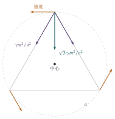

STEP I 1999，第 11 題
繼續之前，請先閱讀題目（原題為英文）。題目載於 STEP Support Programme 的題目資料庫： step.maths.org/questions/99-s1-q11
引子
兩個以引力互相吸引的天體，其運動可以完全解出，這是牛頓（Newton）證明了的，第 10.6 節 亦已解釋過：兩者各自沿一條圓錐曲線（conic）繞共同的質心（centre of mass）運動，若兩者互相束縛，軌道是橢圓；若能量足以互相逃逸，則是拋物線或雙曲線。再加入第三個天體，一切就不同了。三體問題（three-body problem）沒有能用常見函數表示的通解，而在 1890 年，龐加萊（Henri Poincaré）更發現它的解可以是混沌的，這是混沌（chaos）在數學中首次出現。
然而，有些特殊解卻十分簡單。1772 年，拉格朗日（Joseph-Louis Lagrange）發現，位於等邊三角形（equilateral triangle）三個頂點的三個天體可以作剛性旋轉，整個三角形像車輪一樣轉動。本題要找的，就是質量相等時的這個解。拉格朗日的三角形並非只是趣聞：太陽、木星和數以千計的「特洛伊」（Trojan）小行星正好構成這種位形，今天的太空望遠鏡亦停泊在類似的點上。
動筆之前
一顆星要以角速度（angular velocity）\(\omega\) 沿半徑為 \(R\) 的圓運動，它所受的總力必須是甚麼？
總力的大小必須是 \(m\omega^2R\)，方向指向圓心。因此我們要檢查每顆星所受的總引力是否指向三角形的中心，並求出使其大小恰好相符的 \(\omega\)。
逐步解題
階段 1 幾何
邊長為 \(a\) 的等邊三角形，每個頂點與中心相距多遠？
中心位於每條中線（median）上，與頂點的距離是中線長度的三分之二。中線的長度為 \(a\sin 60^\circ = \frac{\sqrt3}{2}a\)，所以每個頂點到中心的距離是 \[R = \frac23\cdot\frac{\sqrt3}{2}a = \frac{a}{\sqrt3}.\] 由對稱性（symmetry）可知，三角形的中心就是三顆相同的星的質心。
階段 2 一顆星所受的力
另外兩顆星各以大小為 \(\frac{\gamma m^2}{a^2}\) 的力拉它。這兩個拉力之間的夾角是多少？它們的合力（resultant）是多少，又指向哪個方向？
兩個拉力分別沿着三角形在該星處相交的兩條邊，所以它們之間的夾角是 \(60^\circ\)。由對稱性可知，合力沿着這個角的角平分線（bisector），而角平分線通過中心。每個拉力與角平分線成 \(30^\circ\)，所以合力的大小是 \[2\cdot\frac{\gamma m^2}{a^2}\cos 30^\circ = \frac{\sqrt3\,\gamma m^2}{a^2},\] 方向指向中心（圖 10.8.1）。
階段 3 角速度
令合力等於 \(m\omega^2R\)： \[m\omega^2\frac{a}{\sqrt3} = \frac{\sqrt3\,\gamma m^2}{a^2}, \qquad\text{所以}\qquad \omega^2 = \frac{3\gamma m}{a^3}.\] 取這個角速度時，同樣的計算（由對稱性）適用於每一顆星，所以三顆星都繞中心作圓周運動，三角形保持剛性不變。■
階段 4 中心的第四顆星
一顆質量為 \(\lambda m\) 的星位於中心，與每個頂點的距離是 \(\frac{a}{\sqrt3}\)。它對每顆頂點上的星額外施加多大的力？質心會移動嗎？中心的星有沒有受到淨力？
中心的星不會改變質心的位置，而由對稱性可知，它所受的三個拉力互相抵消，所以它保持靜止。它把每顆頂點上的星拉向中心，力的大小是 \(\frac{\gamma\lambda m^2}{(a/\sqrt3)^2} = \frac{3\gamma\lambda m^2}{a^2}\)。現在頂點上的星所受指向中心的總力是 \((\sqrt3 + 3\lambda)\frac{\gamma m^2}{a^2}\)，所以 \[m\omega^2\frac{a}{\sqrt3} = (\sqrt3 + 3\lambda)\frac{\gamma m^2}{a^2}, \qquad \omega^2 = \frac{(3 + 3\sqrt3\,\lambda)\gamma m}{a^3} = \frac{3\gamma m}{a^3}\bigl(1 + \sqrt3\,\lambda\bigr). \qed\]

回顧
猜一個對稱的解。我們並沒有解出三體問題；我們只是猜了一種高度對稱的運動，再檢查牛頓定律是否容許它。
對稱性決定方向。合力必定沿着角平分線，所以只需計算它的大小。
檢查每一個天體。由對稱性可知，驗證了一顆星就等於驗證了全部三顆；中心的星則需要另作（容易的）檢查。
背後的數學
喬裝的開普勒定律
把答案寫成 \(\omega^2a^3 = \gamma(3m)\)。對於相距 \(a\)、沿圓形軌道運行的兩個天體，開普勒（Kepler）第三定律（第 10.6 節 的一道練習）指出 \(\omega^2a^3 = \gamma(m_1 + m_2)\)，右邊出現的是總質量。三顆星遵從同一條定律，總質量為 \(3m\)。事實上，拉格朗日證明了等邊三角形解對任意三個質量都存在，而不限於相等的質量：三角形繞質心旋轉，並且 \(\omega^2a^3 = \gamma(m_1 + m_2 + m_3)\)。歐拉（Euler）在幾年前已找到第二族解，其中三個天體位於一條旋轉的直線上。這五種位形（三種共線、兩種三角形，不計標號的差別）是三個天體能保持形狀不變的僅有情況。
拉格朗日點
取 \(m_1\) 為太陽，\(m_2\) 為一顆行星，\(m_3\) 為一顆微小的小行星。等邊三角形解告訴我們，小行星可以停留在與太陽和行星構成等邊三角形的第三個頂點上，在行星軌道上位於行星的前方或後方。這就是拉格朗日點（Lagrange points）\(L_4\) 和 \(L_5\)；歐拉的共線解則給出 \(L_1\)、\(L_2\) 和 \(L_3\)。木星有超過一萬顆已知的「特洛伊」小行星，聚集在它的 \(L_4\) 和 \(L_5\) 點附近。詹姆斯·韋伯太空望遠鏡（James Webb Space Telescope）在日地系統的 \(L_2\) 點附近運行，位於地球以外 \(1.5\) 百萬公里處，在那裏它可以把太陽、地球和月球全部擋在遮陽罩之後。
穩定性
造星者的三角形能維持下去嗎？對於相等的質量，答案是不能：最輕微的擾動也會不斷增長，幾顆星最終不是四散飛離，就是互相碰撞。Edward Routh 在 1875 年證明，拉格朗日的三角形只有在其中一個質量佔絕對優勢時才是穩定（stable）的，確切的條件是 \[27(m_1m_2 + m_2m_3 + m_3m_1) < (m_1 + m_2 + m_3)^2.\] 對於太陽和木星，這個條件綽綽有餘地成立，這就是特洛伊小行星得以長存的原因。對於三個相等的質量，\(27 \times 3m^2 > 9m^2\)，所以這個位形並不穩定。
1887 年，瑞典國王奧斯卡二世（Oscar II）懸賞徵求多體問題的解。龐加萊在 1889 年憑一篇關於三體問題的長篇論文獲獎，但論文付印期間，一位編輯發現了其中一處漏洞。在修正的過程中，龐加萊發現有些解的表現「複雜得驚人，我甚至無法嘗試把它畫出來」：這是人類對混沌的第一瞥。已印好的論文全數收回銷毀，費用由龐加萊承擔。新的特殊解至今仍不斷被發現：1993 年 Cristopher Moore 以數值方法發現，而 2000 年 Alain Chenciner 與 Richard Montgomery 證明，三個相等的質量可以沿一條 8 字形曲線互相追逐。此後，人們借助電腦又找到了數以千計的周期軌道。
思維技巧
當一個問題難以在一般情況下解出時，不妨尋找對稱性盡可能高的解。對稱的猜想能把許多未知量減少到一兩個，而驗證它往往很容易。
這是數學和物理中一個強而有力的策略：對稱的平衡態、穩態、行波和剛性旋轉的位形，往往是最先找到的解，也是研究其餘各種解的起點。接下來要問的，永遠是這個對稱解是否穩定。
延伸練習
正方形上的四顆星。四顆質量為 \(m\) 的星位於邊長為 \(a\) 的正方形的四個頂點。證明它們可以繞中心作剛性旋轉，其中 \(\omega^2 = \frac{(4 + \sqrt2)\gamma m}{2a^3}\)。
兩顆相同的星和一顆行星。兩顆質量為 \(M\) 的星相距 \(a\)，繞它們的質心運行。一顆質量可忽略的行星位於中心。它是否處於平衡？對於沿兩星連線方向的微小位移，它是否穩定？垂直於連線的方向又如何？
不相等的質量。質量分別為 \(m_1\)、\(m_2\)、\(m_3\) 的三顆星位於邊長為 \(a\) 的等邊三角形的三個頂點，並繞它們的質心 \(G\) 旋轉。證明 \(m_1\) 所受的引力為 \(\frac{\gamma m_1(m_1 + m_2 + m_3)}{a^3}\,\overrightarrow{P_1G}\)，其中 \(P_1\) 是它的位置。（提示：把各力寫成向量，並利用質心的定義。）由此推導出拉格朗日的結果。
\(n\) 顆星。\(n\) 顆相同的星位於一個正 \(n\) 邊形的各個頂點，該正多邊形內接於半徑為 \(R\) 的圓。求剛性旋轉的 \(\omega^2\)，並把它表示成 \(\frac{1}{\sin(k\pi/n)}\) 對 \(k\) 求和的形式。
延伸閱讀
June Barrow-Green, Poincaré and the Three Body Problem（American Mathematical Society）。講述那次懸賞以及龐加萊發現混沌的故事。
Richard Montgomery, “A new solution to the three-body problem”, Notices of the American Mathematical Society 48 (2001)。由 8 字形軌道的其中一位發現者親自講解；可於網上免費閱讀。
Florin Diacu & Philip Holmes, Celestial Encounters（Princeton University Press）。一部關於三體問題與混沌的通俗歷史。